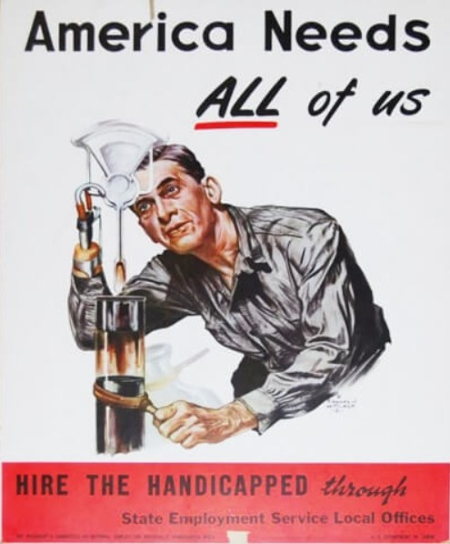
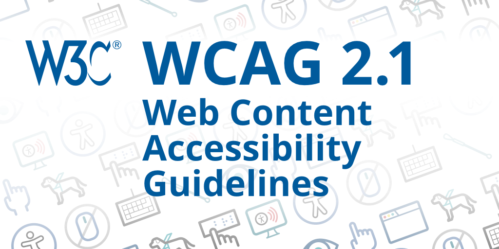

A diagram of the medical model of
disabilityA diagram of the social model of
disability
a list of offensive terminology for
disabled people
terminology
Thirty years ago, I was asked as a designer to make a logo for a
group of lesbians who wanted to be called “Differently Pleasured” in
response to some disabled activist women who called themselves
“Differently Abled”. Was it a joke? Were they trying to offend the
others? I’ll never know the point for certain but it raises an issue
about speech and who gets to name themselves what.
Establishment of Regulatory Requirements and Norms
A still from The Best Years of Our Lives
(1946)
The role of WWII
Americans may have first awakened to their responsibilities for
disabled people with the return of disabled veterans from WWII. Pictured
here is one such veteran, Harold Russell, who starred in The Best
Years of Our Lives (1946).

A poster advocating disabled hiring from
1951
By 1947, President Truman established a committee to promote
employment of the disabled
Here is a 1951 poster from their annual campaign
An early wheelchair basketball
game
An early wheelchair basketball game typifies activities once denied
to persons with disabilities
Accessibility as a civil right
A banner featuring a quote from Martin
Luther King at a Section 504 protest
During the civil rights movement of the 1960s, disabled people began
to organize
In 1973, Section 504 of the Rehabilitation Act was passed
A sit-in by wheelchair users in an
official’s office
Sit-ins were one civil disobedience strategy used to secure Section
504 rights.
Activist Judy Heumann
speakingExplanation of Section 504Protesters crawling up the US Capitol
stepsProtesters, including Jennifer
Keelan-Chaffins, crawling up the US Capitol steps
ADA
(The Americans with Disabilities Act) History and Basic Rules
ADA logoADA ExplanationIDEA

WCAG / W3C logo
WCAG
Web Content Accessibility Guidelines (WCAG) 2 is developed through
the W3C (World Wide Web Consortium) process in cooperation with
individuals and organizations around the world, with a goal of providing
a single shared standard for web content accessibility that meets the
needs of individuals, organizations, and governments
internationally.
The WCAG documents explain how to make web content more
accessible to people with disabilities. Web “content” generally refers
to the information in a web page or web application, including:
information such as text, images, and sounds
or markup that defines structure, presentation, etc.
Who WCAG is for
WCAG is primarily intended for:
content developers (page authors, site designers, etc.)
authoring tool developers
accessibility evaluation tool developers
who want or need a standard for web accessibility, including for
mobile accessibility
What is in WCAG
The WCAG standards have 12–13 guidelines. The guidelines are
organized under 4 principles:
perceivable,
operable,
understandable, and
robust.
For each guideline, there are testable success criteria. The success
criteria are at three levels: A, AA, and AAA.
The success criteria are what determine “conformance” to WCAG. That
is, in order to meet WCAG, the content needs to meet the success
criteria. Details are in the Conformance section of WCAG.
Who is in charge of WCAG
The WCAG technical documents are developed by the Accessibility
Guidelines Working Group (AG WG) (formerly the Web Content Accessibility
Guidelines Working Group), which is part of the World Wide Web
Consortium (W3C) Web Accessibility Initiative (WAI).
WAI updates Techniques for WCAG 2 and Understanding WCAG 2
periodically. We welcome comments and submission of new techniques.
Opportunities for contributing to WCAG and other WAI work are
introduced in Participating in WAI.
Can you give an example?
Success Criterion 1.2.4 Captions (Live)
(Level AA)
Captions are provided for all live audio content in synchronized
media.
Problems?
Complexity; time required to deliver results
38 guidelines to meet AA standard
difficult to sue over it (but Winn-Dixie was successfully sued)
standard keeps changing—requires continuing education
practical difficulties, e.g., can’t easily provide captions in
Hebrew
companies make exaggerated claims that they can easily automate the
process for you
A Section 508 logoSection 508 featuresSection 508 roadmap for FEMASection 508 GSA missionPresident Obama signs the CVAA, with
Stevie Wonder and others standing behind himEqualWeb’s CVAA compliance
badge
CVAA Titles
The Twenty-First Century Communications and Video Accessibility Act
of 2010 (CVAA) updates federal communications law to increase the access
of persons with disabilities to modern communications.
It has two Titles:
Title 1, covering communication access, increases the scope of
communications services that must be made accessible to users with
disabilities
Title 2, covering video programming, requires that video
programming, services, and equipment, be made accessible to users with
disabilities
It is framed as a technical law, as opposed to earlier acts that were
framed as civil rights law. Hence, it tries to future-proof itself
against new technologies.
Can you give an example?
From Section 102.(b):
Section 710(c) of the Communications Act of 1934 (47 U.S.C.
610(c)) is amended by adding at the end the following: ‘‘A telephone or
other customer premises equipment that is compliant with relevant
technical standards developed through a public participation process and
in consultation with interested consumer stakeholders (designated by the
Commission for the purposes of this section) will be considered hearing
aid compatible for purposes of this section, until such time as the
Commission may determine otherwise. The Commission shall consult with
the public, including people with hearing loss, in establishing or
approving such technical standards. The Commission may delegate this
authority to an employee pursuant to section 5(c). The Commission shall
remain the final arbiter as to whether the standards meet the
requirements of this section.’’.
Digital ADA lawsuit graphicUN CRPD logo
What is UNCRPD?
The UN Convention on the Rights of People with Disabilities (UNCRPD)
is an international human rights treaty that reaffirms that all persons
with disabilities must enjoy all human rights and fundamental
freedoms.
Its articles clarify that all disabled persons have the right to
participate in civil, political, economic, social and cultural life of
the community just as anyone else.
The Convention clearly stipulates what public and private authorities
must do to ensure and promote the full enjoyment of these rights by all
disabled people.
Not all frameworks are in law. For example, Dogucu, Johnson, and Ott (2021) is a
voluntary framework for accessibility in data science.
END
References
Dogucu, Mine, Alicia A. Johnson, and Miles Ott. 2021. “Framework
for Accessible and Inclusive Teaching Materials for Statistics and Data
Science Courses.”https://arxiv.org/abs/2110.06355.
COLOPHON
This slideshow was produced with reveal.js using the moon theme.
pandoc was used to convert the source markdown to html.
The source can be found at the same URL as the presentation by
substituting index.md for index.html